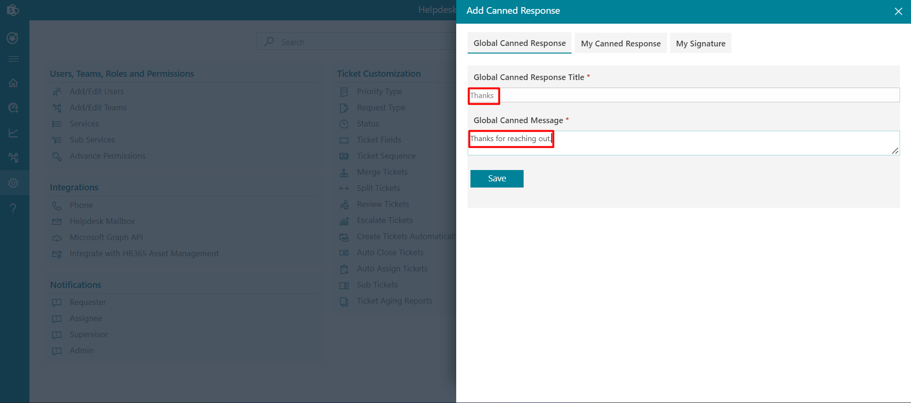
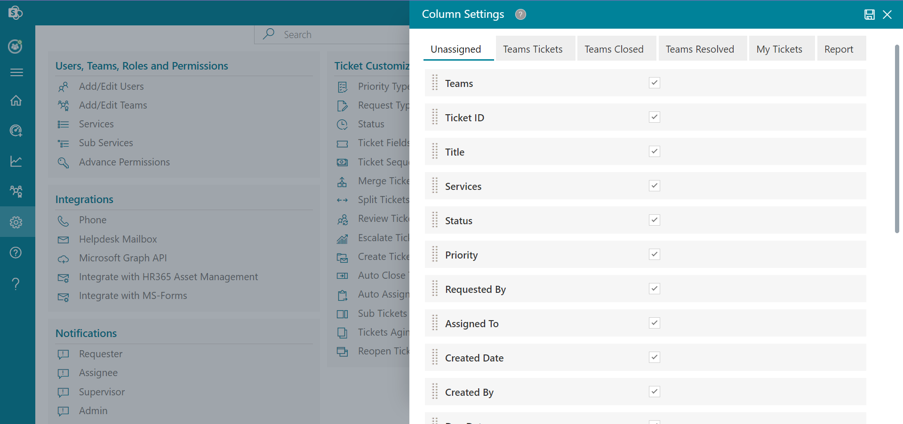
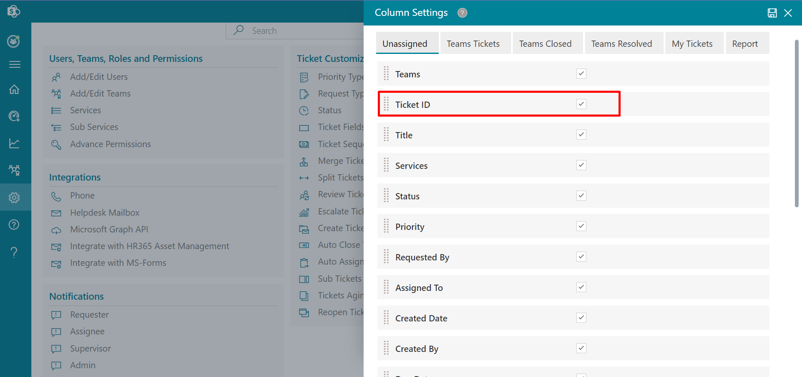
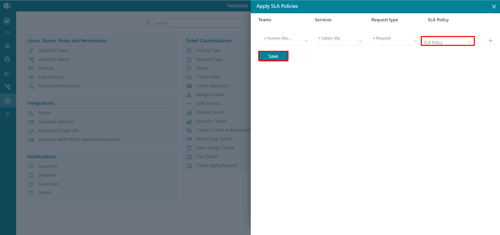

Features
From here you can customize the features of helpdesk application.

- Go to the Settings, click Canned Responses under Features.
-
CLick +New, this displays New Canned Response.
 -
Enter Canned Response Title and Canned Message.
-
Click on Save button.
Canned Responses
Canned response settings is available for all admin, supervisor and agents in the settings page. These responses can be viewed and used during a ticket comment in the comment page. To use these responses, click on the reply option and then on the canned response, the panel will open, select your response and click on the add button.
There are 3 types of canned response.
Global canned response: These are public responses; all team members can create and use them freely. My canned response: These responses are individual or user specific, one who created, can view and use during a ticket comment in the comment page.
My signature: All team members can set their own default signature. The default signature comes up on the comment page during ticket comments. These responses or signatures are individual-specific.

To create the Canned Responses, follow the below steps:
Applicable for global canned response, my canned response, and my signature.
Delete: Click the delete icon, this displays a dialog box. Click Yes button.
Edit: You can edit Title and Message Body. Click the edit icon, this displays Edit Canned Response. Update the Title and/or Message Body and click on Update button.
Customer Satisfaction
A survey link notification is sent to the ticket requester once their ticket has been resolved or closed. From here survey link notification can be set either for resolved or closed tickets or sent manually.

If Allow agent to send a survey link is selected, Click here link will show when ticket status is set to resolve in the properties panel in the comment page from where ticket assignee can send survey notification to the requester by clicking on it.

Delete: Click the delete icon, this displays a dialog box. Click Yes button.
Edit: You can edit Survey Name, Point scale, Thank you page and survey link in emails.
-
Click on + New Column, this displays New Column page.
-
Select the check box from the category.
In the category, you have two options Ticket Description and Ticket Property. If you select ticket description, details will be visible on the comment page and If you select ticket property, details will be visible on the home page.
-
Enter column name, select type and active. Then Click on Save button.
-
Click on + New Sub Column, this displays New Sub Column page .

-
Select Column, Sub Column Type, Column Values, Sub Column Values, active and enter Sub Column Name, select .

-
Click on Save button.
Custom Column
From here you can add, edit and delete the custom column.
To add new column, follow the below steps:
You can create sub column for main coulmn of only choice type.
To add new sub-column, follow the below steps:
-
Enter the Name and Description.
-
Select Helpdesk Hours
-
Click Submit button.
Business Hours
From here, the admin can add, edit and delete business hours.
To add business hours, follow the below steps:

-
There are four tabs available in the Column Settings panel: Unassigned, Team Tickets, Team Closed, and Team Resolved.

-
With the use of this setting, you can rearrange the columns in the desired order by dragging the columns.

-
Select the tab under which you want the columns to appear . Now tick the box next to the column you want to display. Click on save button.

-
A certain column that you chose under the Team Tickets tab will appear on the Home Page..

Column Settings
From Column Setting admin can hide , show and sort columns.

Define SLA Policies
An SLA policy (service level agreement) lets you set standards of performance. They're like a target, or a deadline, within which your support team is expected to resolve tickets. If any of the policies are breached, mail notification will escalate to the team.
By default SLA policies are disabled, you can enable it by clicking Enable SLA toggle switch.
SLA Calculation : Two types are displayed below: Initial Response SLA and Resolve Time SLA . Choose the desired option from the checkbox now and click on save button .

-
First, click the Configure button next to the Apply SLA Policies.
-
Apply SLA Policies panel will open . There are four dropdown menus: Teams, Services, Request Type, and SLA Policy.

-
Click the save button after making your selections from the dropdown menus.

Apply SLA Policies
The defined SLA policies can be applied from here.
Follow these steps to apply SLA policies
- Go to the home page and click the Ticket ID to open the comment page.
-
On the comment page, click the Reply button, this displays pop-up to
write the comments.

- Click the Update button, this displays the Track Time popup.
-
Enter the time taken to resolve the ticket in minutes.

Time Tracking
Admin, supervisor, and agent can track time on their tickets. They can add time during the comment of the tickets.By default time tracking are disabled, you can enable it by clicking Enable Time Tracking toggle switch. You can enable Make Time Tracking Mandatory also.

To use the time tracking, follow the below steps:
You can edit the time spent by clicking on the edit icon.

You can find the Track Time column on Home Page.